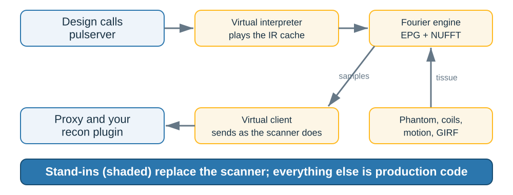
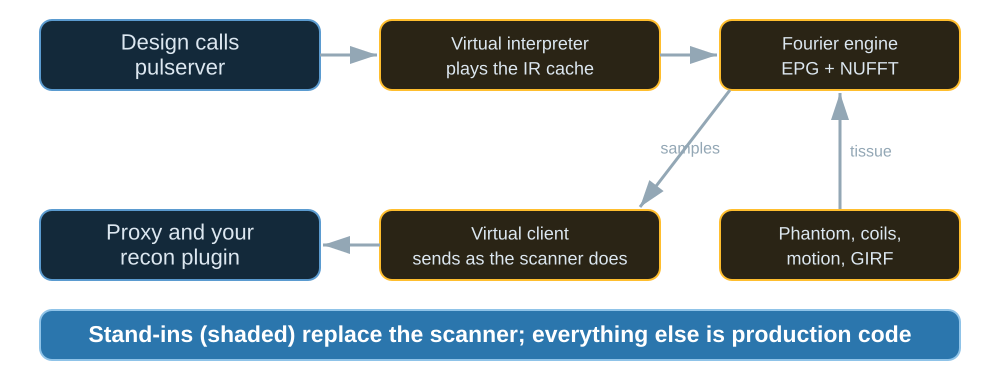

Virtual scanner#
TL;DR
The virtual scanner replaces the scanner and its interpreter, and nothing else: design calls, IR, proxy and plugins are production code.
It plays the IR cache through the C library and acquires a phantom with the Fourier engine: extended phase graphs per tissue class, encoded by a NUFFT.
Diffusion, rigid motion and a gradient impulse response are modelled where a scan needs them.
Data sampled where the enrichment says k-space lies cannot test the enrichment, and a design compared with itself cannot test the IR. So the virtual scanner acquires a phantom along the trajectory the cache plays, under the pulses the cache plays, and sends the readouts as a scanner’s client does. Lesson 6 of the Course runs a sequence on it; a browser build of its console is at https://pulserver.github.io/MaRGE/.
Capabilities#
Plays the IR cache through the C library’s playout stages, as an interpreter does.
Code:
playout(). Tests: the played trajectory is the one each file designs turned as it is checked; the prescription turns a block after its own rotation unless it is labelled norot (test_virtual.py); every shipped sequence plays its design turned as it is checked (test_virtual_sequences.py).Acquires along the played trajectory, so the trajectory enrichment states is tested against it.
Code:
simulate(). Tests: the enrichment states the trajectory the scanner plays; a virtual scan reconstructs the phantom where it is prescribed (test_virtual.py).Simulates each tissue class with extended phase graphs, and encodes the images they weight by a NUFFT.
Code:
FourierPlayer. Tests: the fourier engine acquires what a bloch simulation does of a phantom filling its slices; the fourier engine acquires what a bloch simulation does of an unspoiled steady state; each readout reads the pathway that passes the centre during it (test_virtual_fourier.py).Plays each RF pulse with the flip angle, phase and profile a Bloch simulation of its waveform gives, including spectral-spatial selection.
Code:
FourierPlayer. Tests: a pulse played without a gradient selects by frequency; a spectral spatial pulse selects by frequency and by position along its slab (test_virtual_fourier.py); fat saturation leaves each shift what its designed pulse leaves it (test_virtual.py).Places an object at the prescription, so a field-of-view offset is tested end to end.
Code:
Phantom. Tests: an object posed as prescribed is acquired as at the isocentre (test_virtual.py); every shipped sequence scans an object posed as prescribed as at the isocentre (test_virtual_sequences.py).Models chemical shift and off-resonance at the magnet’s field.
Code:
Tissue. Tests: fat precesses at its chemical shift at the field of the magnet; off resonance accrues from the excitation and refocuses at the echo (test_virtual.py).Receives with the scanner’s coils, the body coil or BART’s head-array models, with the default shim on transmit.
Code:
COILS. Tests: the body coil is one channel of unit sensitivity each way; receive sensitivities have a root sum of squares of one at the isocentre; a pulse without an rf shim plays its amplitude at the isocentre through the default shim (test_virtual_coils.py).Scans BrainWeb’s head, with relaxation at the field and the field its susceptibility adds.
Code:
Phantom. Tests: each tissue relaxes at 1 5 t as brainweb s simulator gives it; each entry precesses at the mean field its head adds over its cube (test_virtual_brainweb.py).Adds diffusion, rigid motion and a gradient impulse response.
Code:
RigidMotion,Girf. Tests: a diffusing tissue loses exp minus b d of its echo to the lobes; a subject held in a pose acquires what a phantom placed in it does; a delaying girf plays the moment its delay later (test_virtual_fourier.py).Releases readouts in real time and plays the sound of the gradients.
Code:
Scan. Tests: a scan played at a speed yields each span once its clock passes it; the spans of a scan sound as its design sounds (test_virtual_clock.py).Runs a console that makes only the design calls a scanner makes, and returns DICOM.
Code:
pulserver.virtualconsole. Tests: a console makes only the design calls; a scan streams its clock and returns the reconstruction as dicom (test_console.py).Exports a cache as Pulseq 1.5.1 for an external Bloch simulator.
Code:
pulserver.virtualexport. Test: every shipped sequence exports the trajectory its cache plays (test_virtual_export.py).
Limitations#
RF pulses act at their centre, without relaxation, as ideal rotations; the phase a selective pulse leaves across its slab is left out.
pTx pulses sum their channels at unit, in-phase sensitivity.
Coil models are BART’s, not electromagnetic simulations, unless a console is given field maps.
Method#

The stand-ins between pulserver’s production code: interpreter, physics and client.#

The stand-ins between pulserver’s production code: interpreter, physics and client.#
Played trajectory#
The virtual interpreter plays the cache and integrates the gradients into k,
in 1/m along the physical axes, turned by the prescription except in NOROT
blocks. An excitation resets k and a refocusing pulse negates it, at the RF
centre the design records.
Fourier engine#
What happens to the magnetization over time is separated from where the tissue is. Each class of tissue (equal \(T_1\), \(T_2\), \(T'_2\)) is simulated by blochsim’s extended phase graphs over the pulses and gradient moments the cache plays; the images those signals weight are encoded along the trajectory by bartorch’s NUFFT, one per coil:
A few terms \(t\) span the signals of every class and cube, so the number of transforms is set by the terms, not by the tissue. The playout then demodulates by the ADC offsets, as the scanner does. The full model is in Virtual scanner.
Examples#
6. Test your pair on the virtual scanner: a sequence played and reconstructed on the virtual scanner.
Virtual scanner: the phantom, the Fourier engine, the scan clock, the client and the export.
Virtual scanner: the signal model, its streams, bases and grids, and what a run establishes.